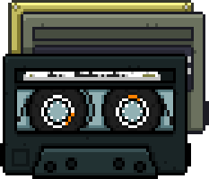

Mixtape 1989
A trilha sonora de Hotline Miami é uma coleção de Synthwave, Dark Wave e Techno que define o ritmo frenético do jogo.

LADO A / LADO B
| # | Música | Artista | Player |
|---|---|---|---|
| 1 | Horse Steppin | Sun Araw | |
| 2 | Hydrogen | M.O.O.N. | |
| 3 | Paris | M.O.O.N. | |
| 4 | Crystals | M.O.O.N. | |
| 5 | Vengeance | Perturbator | |
| 6 | Deep Cover | Sun Araw | |
| 7 | Miami | Jasper Byrne | |
| 8 | Hotline | Jasper Byrne | |
| 9 | Knock Knock | Scattle | |
| 10 | Musikk Per Automatikk | Elliot Berlin | |
| 11 | Miami Disco | Perturbator | |
| 12 | Release | M.O.O.N. | |
| 13 | A New Morning | Eirik Suhrke | |
| 14 | Flatline | Scattle | |
| 15 | Silver Lights | Coconuts | |
| 16 | Daisuke | El Huervo | |
| 17 | Turf | El Huervo | |
| 18 | Crush | El Huervo | |
| 19 | Electric Dreams | Perturbator | |
| 20 | Inner Animal | Scattle | |
| 21 | It's Safe Now | Scattle | |
| 22 | To the Top | Scattle |
Curiosidade
Os desenvolvedores Jonatan Söderström e Dennis Wedin queriam que a música soasse como a trilha sonora de um filme, buscando forte inspiração no filme Drive (2011). Eles enfatizaram um contraste entre a música retrô e o techno moderno do jogo, suas cores vibrantes e a jogabilidade brutal.